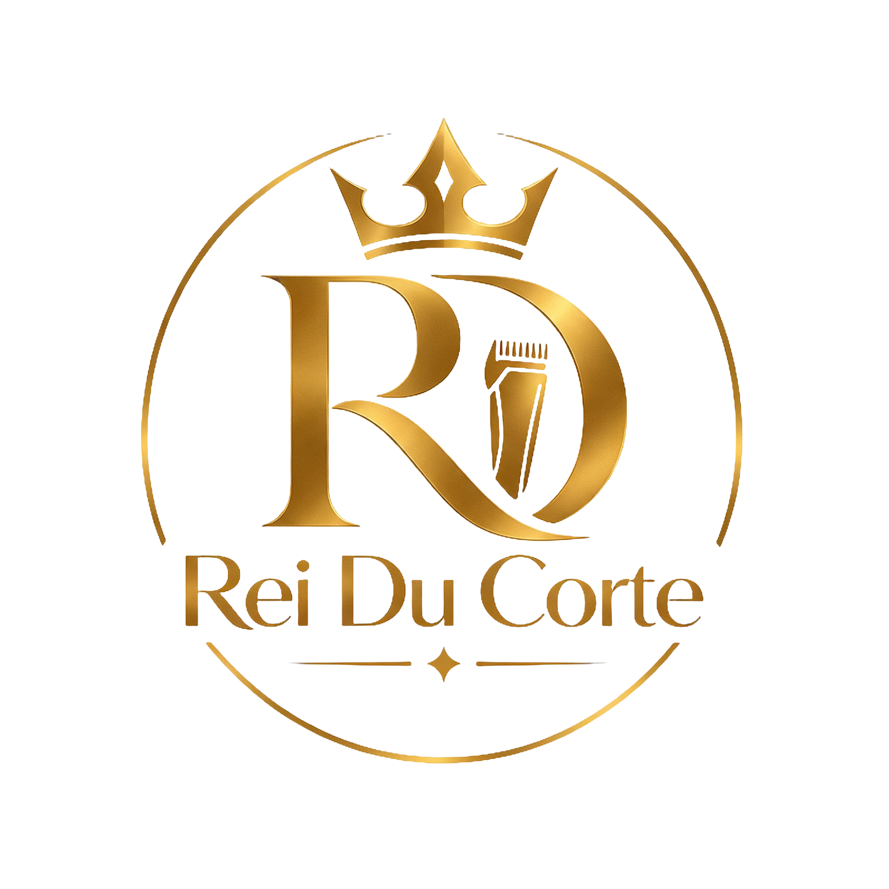
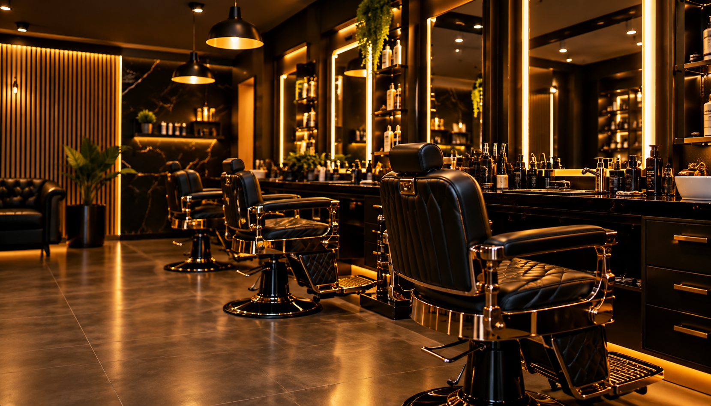

Corte masculino
Cortes tradicionais para adultos e crianças.

A barbearia que você procura.
Tradição, técnica e estilo.

Com 20 anos de experiência no ramo, a Rei Du Corte é referência em cortes clássicos, barba bem feita e estética masculina. Nossos barbeiros trabalham com técnica e atenção aos detalhes, em um ambiente pensado pra quem valoriza tradição.
Cortes tradicionais para adultos e crianças.
Desenho e acabamento feitos com sua preferência.
Sobrancelha, pigmentação, nevou.
Experiência completa em um só atendimento.